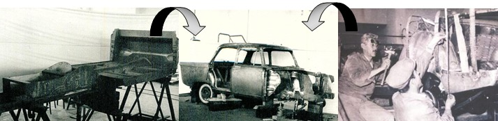
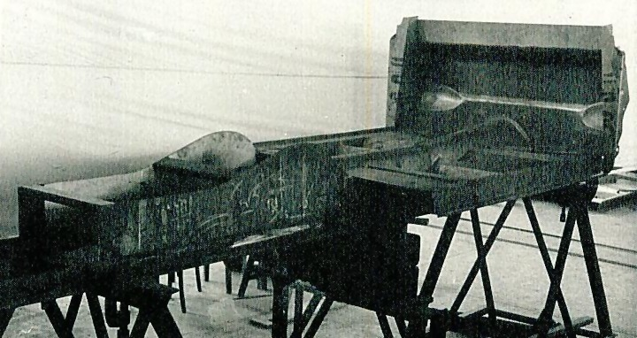
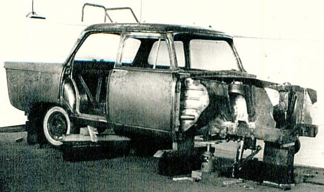
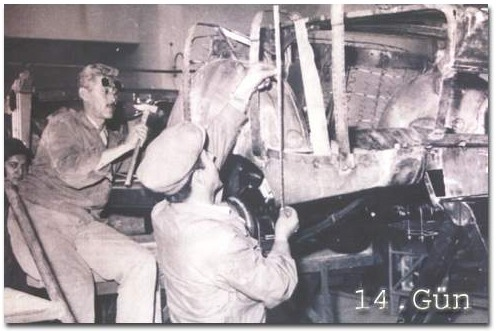
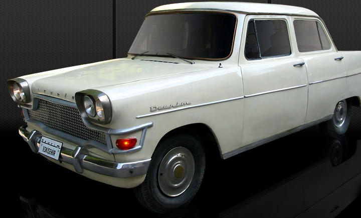
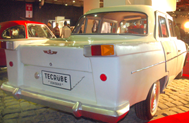
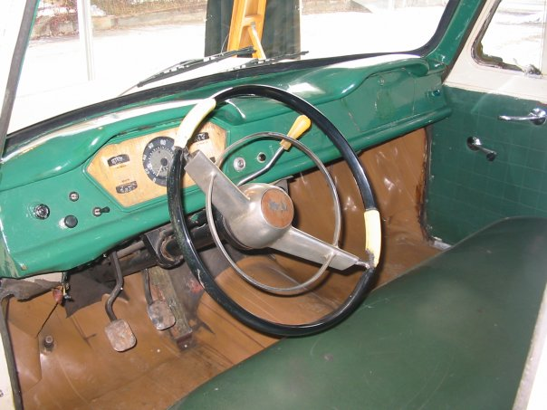
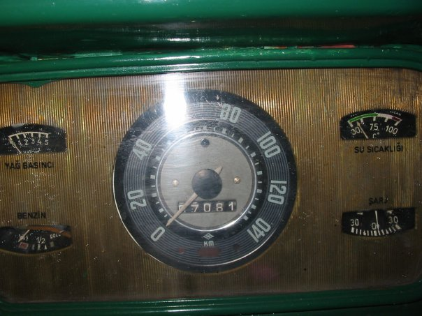

|
Krikolarda çekilen gövde saclarý platform üzerine kaynatýlarak ve çekiçlemek sureti ile þekillendirilir:

Þekil 8. Gövdenin þekillendirilmesi



Alt parça tedarikinde ortaya çýkan sorunlar da tasarýmýn ana hatlarýný deðiþtirmiþtir. "Eylül sonuna doðru, ön ve arka camlarý, piyasada bulunabilenlere uydurmak zorunluluðuyla modele göre biraz deðiþtirilmiþ iki gövde çatýlmýþ ve biri A diðeri B tipinden iki ayrý motor hazýrlanmýþ bulunuyordu", (Saðýn, 2004).
Gövdenin tasarým süreci, alçýdan prototip yapýlmasý ile baþlamýþ, daha sonra teknik kýsýtlamalar yüzünden aþaðýda görüldüðü gibi neticelenmiþtir.




3. Sonuç
Devrim Arabalarý Türkiye'nin tamamen kendi olanaklarý ile gerçekleþtirdiði ilk deneyimdir. Devrim Arabalarý çok farklý politik ve sosyo-ekonomik zeminlerde tartýþýlmýþtýr ve tartýþýlmaktadýr. Bu yazýnýn amacý Devrim Arabalarýnýn Türkiye'nin ilk tasarýmý olup olmadýðýný sorgulamaktýr.
Bu konuda oluþan literatür ve görsel materyal yorumlanarak, Devrim Arabalarýnýn Türkiye'nin ilk araç tasarým çalýþmasý olduðu sonucuna ulaþýlmýþtýr. Çünkü;
1- Tasarým Stratejik olarak ele alýnmýþtýr,
2- Tasarým hedefleri belirlenmiþtir,
3- Benchmarking yapýlmýþtýr,
4- Konusunun uzmanlarý görevlendirilmiþtir,
5- Prototip ve kalýp çalýþmalarý eldeki teknik imkanlar dahilinde bilinçli olarak yapýlmýþtýr,
6- Tasarým üretilmiþtir.
Referanslar:
- Akgün, Müge. "Cemal Paþa Bile Devrime Sýrtýný Döndü", Hürriyet, 25 Ekim, 2008
- Güven, Ayþegül. "Devrim namus davamýzdý 75'ime geldim öfkem geçmedi", Hürriyet, 22 Kasým, 2008
- Kiper, Mahmut. "Umutlar benzinle tükendi", Cumhuriyet, 2008, Aðustos 12
- Örnek, Tolga. "Devrim Arabalarý", Ekip Film, 2008
- Saðýn, Salih Kaya. "Baþarý mý, fiyasko mu?" Mühendis Makina Dergisi, Sayý:326, 1985
- Þimþek, Muhittin Þimþek. "Yarým Kalan Devrim Rüyasý", Alfa Yayýnlarý, 2006
- (TTAG) Toplu Taþýma Araçlarý Grubu, "Toplantý tutanaðý", ODTÜ, 9 Haziran 2003
- http://arama.hurriyet.com.tr/arsivnews.aspx?id=10208272
- http://bilimteknik.cumhuriyet.com.tr/?im=yhs&hn=416
- http://en.wikipedia.org/wiki/Opel
- http://en.wikipedia.org/wiki/File:1960_Chevrolet_Corvair.JPG
- http://oica.net/category/production-statistics/
- www.a-sp.org/publications.htm
- www.ataturkotosanayisitesi.com/Devrim.html
- www.capital.com.tr/haber.aspx?HBR_KOD=426
- www.hurriyet.com.tr/ekonomi/10417819.asp?gid=254
- www.mmoistanbul.org/yayin/bulten75/
- www.oaib.gov.tr/moment/moment03.pdf
- www.turkey-now.org/default.aspx?pgID=492
- www.trumanlibrary.org/photographs/view.php?id=20749
- www.tulomsas.com.tr/en/main.php?kid=67
|